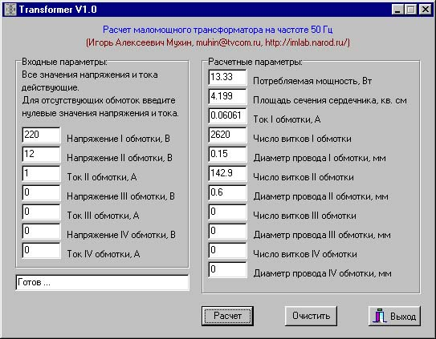

Transformer: Программа расчета маломощного трансформатора на частоте 50 Гц
Введение
Маломощный (от 1 до 500 Вт) трансформатор на частоте 50 Гц, в частности, силовой трансформатор блока питания может быть рассчитан по следующим приближенным формулам [1]:
где P - мощность трансформатора, Вт; Ui - напряжение i-й обмотки, в частности, U1 - напряжение первичной обмотки, В; Ii - ток i-й обмотки, в частности, I1 - ток первичной обмотки, А; K - коэффициент полезного действия (КПД) (0.8 - 0.9); S - площадь поперечного сечения используемого сердечника (для Ш-образного - площадь поперечного сечения средней ножки), см2; Ni - число витков i-й обмотки; Di - диаметр провода i-й обмотки, мм.
Программа Transformer: Transformer.rar (~86 Кбайт)

Рис. 1. Внешний вид окна программы Transformer (версия 1.0).
Для расчета по вышеприведенным формулам может быть использована программа Transformer. Файл Transformer.rar следует распаковать в заранее созданную папку (упаковка производилась с помощью WinRAR 2.80). Результат распаковки: Transformer.exe - исполняемый файл программы. Программа может работать с операционными системами (ОС) Windows 3.1, Windows 95, 98 и XP (с другими ОС семейства Windows не проверялась). При вводе данных учитывайте принятый в ОС формат разделителя для десятичной дроби - точка или запятая, например, 0.5 или 0,5; необходимо установить точку.
Предполагается, что трансформатор имеет одну первичную обмотку, которая подключается к источнику переменного напряжения частотой 50 Гц, и до трех вторичных обмоток, с которых снимается нагрузочный ток. КПД трансформатора принят равным 0.9. По результатам расчета можно подобрать сердечник для трансформатора и обмоточные провода. Проверить правильность расчета можно по рис. 1.
Скопированные файлы могут быть проверены на отсутствие вирусного кода в режиме on-line [2].
Ссылки:
08.11.2005
22.06.2010
Альтернативные источники
энергии
Компьютеры и
Интернет
Магнитные поля
Механотронные системы
Перспективные
разработки
Электроника и технология